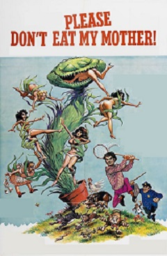
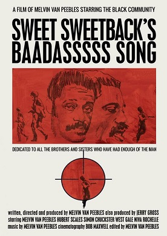

This year's organizer is none other than the founder of the Brooklyn Vibes Event Co., Jennifer Viala. The festival will be held at the Brooklyn Bridge Park, from August 5th - 8th, 2017. Showtime starts every day from 6pm till midnight. This years theme will be Grindhouse! Tickets are free. People of all ages are encouraged to attend. The Brooklyn Outdoor Film Festival, is an International, competitive festival. BOFF mission is to provide a public forum in Brooklyn in order to advance public interest in films and the independent production of films. To draw worldwide attention to Brooklyn as a center for cinema. To encourage the rights of all Brooklyn residents to access and experience the power of independent filmmaking, and to promote artistic excellence and the creative freedom of artists without censure. BOFF, inc. is a not-for-profit organization. We can only hold 5,000 people per showing. So please register below for the show or shows you plan on attending.
August 5th 6:00pm

A middle-aged man buys a plant with a sexy voice that develops a craving for insects, frogs, dogs, and humans.
August 5th 9:00pm

Melvin Van Peebles wrote, directed, produced, edited, composed and starred in this powerful and inflammatory attack on White America. After the body of a black man is discovered, Sweetback helps two white 'acquaintances' in the police force to look good by agreeing to go with them to the station as a suspect. But he is forced to go on the run after brutally attacking the two policemen when they arrest and beat up a young black man.
August 6th 6:00pm
This audaciously disgusting spectacle from the late master of gruesome horror, Lucio Fulci, was posited as a semi-sequel to George Romero's Dawn of the Dead, which was released in Italy as Zombi. Tisa Farrow and a group of vacationing tourists travel to an island where they find a doctor (Richard Johnson) who is attempting to cure a condition that reanimates the dead. Things quickly get out of control as undead Spanish conquistadors crawl from their graves hungry for human flesh. The nauseatingly graphic set-pieces by Gianetto de Rossi include a close-up of a woman's eye being pierced by a large shard of wood and a zombie fighting a Great White shark underwater. This relatively well-made shocker was enormously popular worldwide and led to the zombie-gore film becoming the dominant motif of 1980s Italian horror.
August 6th 9:00pm
Kowalski works for a car delivery service. He takes delivery of a 1970 Dodge Challenger to take from Colorado to San Francisco, California. Shortly after pickup, he takes a bet to get the car there in less than 15 hours. After a few run-ins with motorcycle cops and highway patrol they start a chase to bring him into custody. Along the way, Kowalski is guided by Supersoul - a blind DJ with a police radio scanner. Throw in lots of chase scenes, gay hitchhikers, a naked woman riding a motorbike, lots of Mopar and you've got a great cult hit from the early 70's.
August 7th 6:00pm
Nurse "Coffy" Coffin leads a double life. During the day, she's a nurse at work. At night, she's an avenging angel on a personal vendetta, tracking down the drug pushers who hooked her younger sister on drugs. Along the way, she meets a honest police detective who also is leading a double life.
August 7th 9:00pm
Three strippers seeking thrills encounter a young couple in the desert. After dispatching the boyfriend, they take the girl hostage and begin scheming on a crippled old man living with his two sons in the desert, reputedly hiding a tidy sum of cash. They become houseguests of the old man and try and seduce the sons in an attempt to locate the money, not realizing that the old man has a few sinister intentions of his own.
August 8th 6:00pm
After an experimental bio-nerve gas is accidentally released at a remote U.S. military base in Texas, those exposed to the gas turn into flesh-eating, mutating zombies out to kill. An assortment of various people who include stripper Cherry, her shady mechanic ex-boyfriend Wray, a strong-willed doctor, the local sheriff, and an assortment of various people must join forces to survive the night as the so-called "sickos" threaten to take over the whole town and the world.
August 8th 9:00pm
In Austin, Texas, the girlfriends Julia, Arlene and Shanna meet in a bar to drink, smoke and make out with their boyfriends before traveling alone to Lake LBJ to spend the weekend together. They meet the former Hollywood stuntman Mike, who takes Pam out in his "death-proof" stunt car. Fourteen months later, Mike turns up in Lebanon, Tennessee and chase Abernathy, Zoë and Kim, but these girls are tough and decide to pay-back the attack.
Kids Shows
The Grindhouse genre may not be suitable for children of all ages. So for the little ones we have a separate screen with age appropriate movies away from the adult features. As an added bonus the kids area will also be secured by unicorns and dolphins.
August 5th
The Secret of Nimh
Strange Magic
Moana
Sing
August 6th
Frozen
Trolls
The Jungle Book
Little Monsters
August 7th
The Never Ending Story
The Sword in the Stone
Muppets in Manhattan
The Last Unicorn
August 8th
Bambi
Ernest Scared Stupid
Toy Story
Teenage Mutant Ninja Turtles
Latest News and Announcements
Announcement I
Because it was a fifty fifty shot on wheter you'd be going left or right. You see we're both going left. You could have just as easily been going left, too. And if that was the case... It would have been a while before you started getting scared. But since you're going the other way, I'm afraid you're gonna have to start getting scared... immediately!
Announcement II
I've seen me a lot of weird shit in my day, but I ain't never seen a one-legged stripper. I seen me a stripper with one breast. And I seen me a stripper with twelve toes. I've even seen me a stripper with no brains at all, but I ain't never seen a one-legged stripper. And I've been to Morocco.
Announcement III
Like you gonna have to kinda lay out, stretch out a little while, be real cool. Kinda lay dead. Ol' Beetle'll let you know what's happenin', what's goin' down. You don't have to worry about nothin'. If you need anything, anything at all, brother, just keep the faith in Beetle, ol' Beetle goin' to bring you through, cause this is just a skirmish. You know how the game goes, baby. But you keep the faith in me and you my man. You my favorite man. Can you dig it, baby? Together, you know, maintain. They can't bother you as long as Beetle's with you. Now you go on and hibernate like that ol' bear and don't go nowhere, can you dig it? Yeah? Ha! Mellow. Go out the back door, now. Speed along and don't let nobody know where you at. Let sleeping dogs rest. You dig it, baby? Ha, ha, yeah.